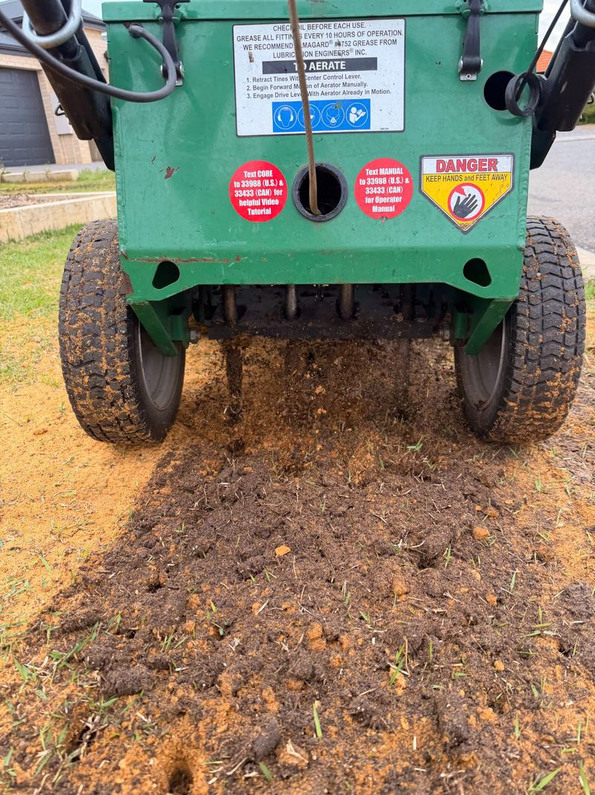

Home › Lawn Aeration
Lawn Aeration & Coring in Perth.
Professional lawn aeration and coring from $1.50/m². If water runs off your lawn instead of soaking in, the soil underneath has stopped breathing. Core aeration opens it back up so water, air and fertiliser reach the roots again.

What Core Aeration Actually Does
A core aerator pulls thousands of small soil plugs out of the lawn, leaving open holes through the compacted layer. The surrounding soil relaxes into the space, water and air move freely again, and roots chase the oxygen downward. Deeper roots mean a lawn that drinks properly, holds colour through summer and bounces back from wear.
Fixes compaction
Foot traffic, mowers, kids and dogs press Perth's sandy soils into a tight layer that roots and water cannot penetrate. Coring is the only practical way to relieve it without replacing the lawn.
Gets water soaking in
Compacted and water-repellent soil sheds irrigation and rain sideways into paths and garden beds. Open cores let it soak where it lands: less runoff, lower water bills, deeper roots.
Sets up every other treatment
Fertiliser, wetting agents and top dressing all work dramatically better on a cored lawn, because they reach the root zone instead of sitting on the surface. Soil aeration first, everything else second.
Aeration Pricing
Lawn Aeration
Core aeration of your lawn with plugs left to break down naturally. Fertiliser and a wetting agent are included as standard on every job. Priced instantly online: measure your lawn, get a number.
Complete Rejuvenation Package
Dethatch + aeration + top dressing + fertiliser and wetting agent + reticulation check, done in one visit. Pick all three core services in the calculator and save 10%.
Rather core it yourself?
We dry-hire the same professional coring machines we use on our own jobs, with the depth set for your grass type before you leave.
When To Aerate A Lawn In Perth
Spring through early summer is the window. The lawn is actively growing, so the core holes fill with fresh roots and runners within weeks. Lawn aeration and coring done in winter leaves a dormant lawn sitting open: same work, none of the recovery. Most lawns want coring once a year; high-traffic areas and heavier soils further inland can justify a second pass in the growing season.
Order matters too: dethatch first if the lawn is thatchy, core second, top dress third, fertilise last. That is exactly the sequence the Complete Rejuvenation Package runs in one visit.
Hard ground? We will tell you straight.
Send your lawn size and a few photos through the online quote and we will price the coring instantly. You do not need to be home, and EFTPOS is available on the day.
Get Your Free QuoteLawn Aeration Services Across Perth
We run core aeration right across the Perth metropolitan area, with most of our work in the northern corridor.
Aeration Questions
When is the best time to aerate a lawn in Perth?
Spring through early summer, once the soil has warmed and the lawn is actively growing. The holes close over with fresh growth in weeks. Aerating a dormant winter lawn just leaves it open and thin.
How often should a lawn be aerated?
Once a year suits most Perth lawns. High-traffic lawns, lawns on heavier soil, and lawns that shed water may benefit from a second pass in the growing season.
What is the difference between coring and spiking?
Coring removes a plug of soil, leaving a hole the surrounding soil can relax into, which genuinely relieves compaction. Spiking just pushes a solid tine in, which can compact the hole walls further. For a compacted lawn, coring is the one that works.
What happens to the soil plugs afterwards?
They are left on the surface and break down over a week or two, returning soil and nutrients to the lawn. Mowing helps them along, and they can simply be raked up if they bother you.
How much does lawn aeration cost in Perth?
From $1.50 per square metre with a $130 minimum job. Fertiliser and a wetting agent are included as standard on every job. Bundle it with dethatching and top dressing and you save 10%. The quote calculator gives you an instant price for your lawn size.
Can I do it myself?
Yes. We dry-hire our coring machines to homeowners across Perth. See the equipment hire page, or call and we will tell you honestly whether DIY or a booked service makes more sense for your lawn.
Give your lawn room to breathe.
Fifteen years renovating Perth lawns. Free quotes, no need to be home, EFTPOS on the day.
Get An Instant QuoteGet a price
Send your details and we will price it. Photos help: text them to 0427 206 246 after you send this. Want numbers right now? Use the full calculator.